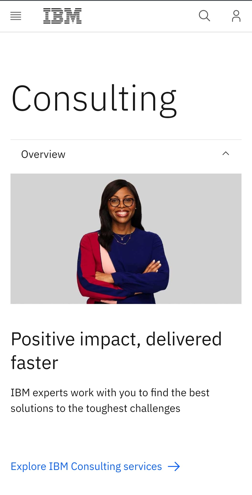
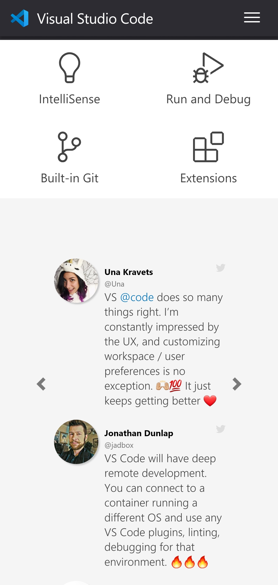

Visual Hierachy
IBM
ibm.com The principle of visual hierachy is applied in this image and website as the first to cathe the attention of a reader is the broad heading of "consulting" which is followed by the image of the woman and after which the sub heading and the paragrapgh text, the way they text is arrange makes viewing very great an simple and also directs the reader or viewer to what's important on that page of the website.
White Space and Clean Design
IBM
ibm.comFrom the presentation of information on this page, there wasa lot of white of blank space left within the design to accomodate for more easier viewing and great professional presentation as well. It make the work more easier to read and prevents over-crowding of words.
PARC alignment
Visual Studio Code
visualstudiocode.com This website utilises the principle of alignment perfect in my view, because as it can be seen from from the image, the text used all have a similar grid with which they follow, they are all in line per their section on text or group of text falls out of line with in the image and they present a uniform front with great visual effect and great professionalism